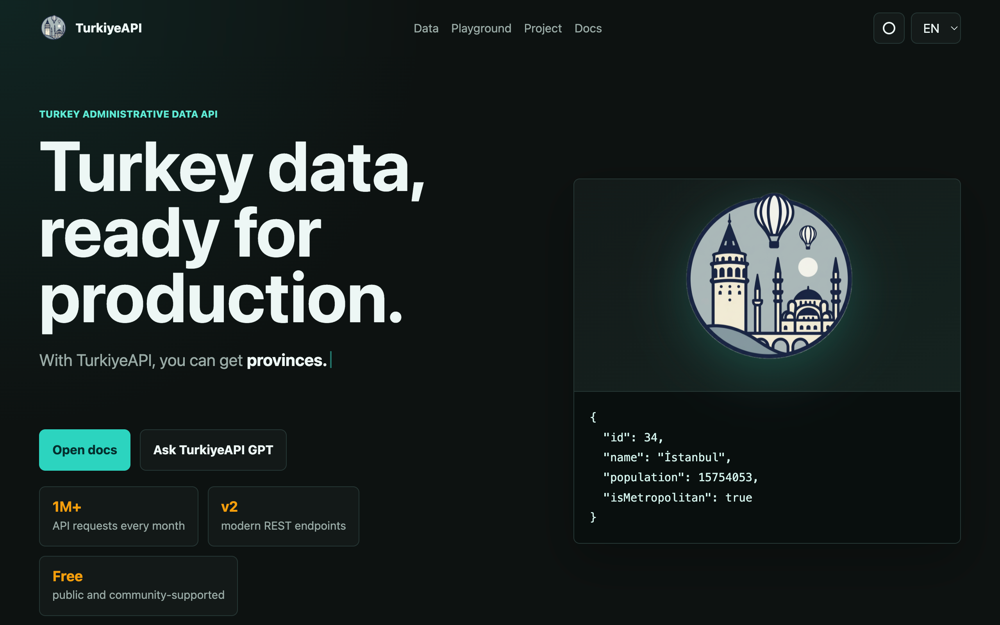

A comprehensive REST API providing detailed information about Turkey's administrative divisions including provinces, districts, municipalities, neighborhoods and villages with demographic and geographical data.

TurkiyeAPI allows you to retrieve data about the provinces, districts, municipalities, neighborhoods and villages of Turkey (all or as much as you want), sort these provinces, districts, neighborhoods and villages (by name, license plate number, population, area covered, etc.), filter according to some characteristics of the provinces, districts, neighborhoods and villages. It is a REST API prepared for developers that you can do (such as showing only metropolises, showing districts with a population between 100000 and 500000).
Includes documentation and example usage scenarios.
Turkiye API is a REST API that uses TypeScript and Fastify on the backend. It is deployed with Dokploy on Hetzner Cloud. The project is open-source and available on GitHub.
When I first released Turkiye API (originally named "Provinces of Turkey API") in 2022, the scope was quite simple: it was just a small API that returned only Turkey's provinces with limited data details. I honestly thought only a few people would use it.
However, things evolved differently than expected. The project gained 150+ stars on GitHub and the API started receiving over 1 million requests per month. This has been quite an educational experience for me. I gradually realized that this simple API was actually responding to a real need.
Based on user feedback and requirements, I gradually added districts, neighborhoods, villages, and various data fields to the project. However, as the project grew, code complexity increased, some design decisions proved unsustainable in the long term, and adding new features on top of v1 became increasingly difficult.
I had attempted v2 a few times before, but abandoned those efforts. This year in April, when I found a suitable window of time, I revived the project and completely rewrote it from scratch.
With v2, I redesigned the project with a much cleaner architecture. Key improvements include:
During this process, I also leveraged AI assistance, particularly for handling JSON data processing, indexing, optimizing data access, and making deployment decisions. However, this experience reinforced an important lesson: AI is an excellent accelerator, but reviewing the generated code, ensuring consistency with the repository structure, and making final technical decisions as a developer remains crucial.
One of the most important lessons I learned while working on Turkiye API is that API development requires constant balancing between "adding new features" and "staying stable, efficient, and maintainable." Every new feature can impact the response structure, cache behavior, endpoint complexity, or backward compatibility.
Looking back, what truly differentiates Turkiye API from my other projects is clear: it genuinely addresses a real need. Providing Turkish administrative data (provinces, districts, neighborhoods, villages, population, etc.) through an easily consumable API has proven to have more use cases than initially anticipated.
For me, Turkiye API v2 is not just a technical rewrite; it's a journey of understanding the consequences of past decisions, thinking about sustainable API design, learning from user feedback, and maturing a genuinely used open-source project. This experience has been invaluable in my growth as a developer.